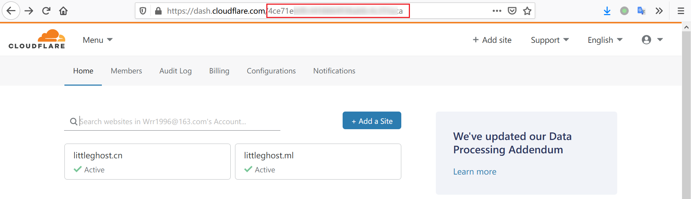
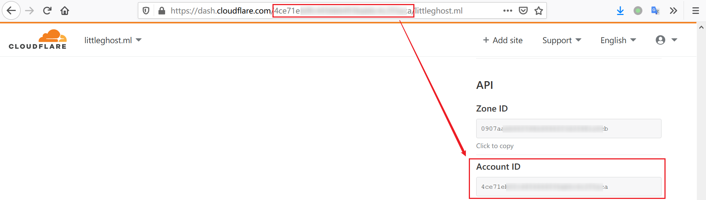
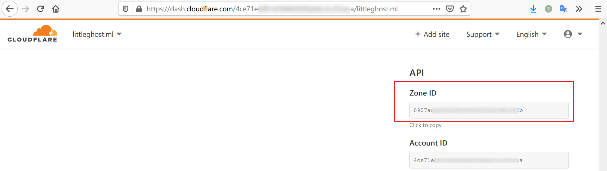
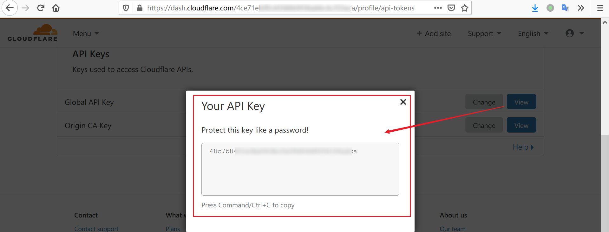

<!DOCTYPE html>


  <html class="light page-post">


<head><meta name="generator" content="Hexo 3.9.0">
  <meta charset="utf-8">
  
  <title>通过API自动更新Cloudflare的DNS解析-Go语言版本 | LittleGhost&#39;s Blog</title>

  <meta name="viewport" content="width=device-width, initial-scale=1, maximum-scale=1">

  
    <meta name="keywords" content="dns,golang,爬虫,">
  

  <meta name="description" content="功能  调用Cloudflare（下称CF）API查询域名对应的identifier和ip  查询本地2001段IPv6地址  通过爬虫查询路由器中的10.173段IPv4地址  对比ip判断是否需要调用CF的API更新ip  在Windows上设置任务计划，定时执行二进制文件  网络信息说明 实验室路由器翼讯拨号，路由器分配10.173段内网IPv4地址，做端口转发。电脑被分配192.168段地">
<meta name="keywords" content="dns,golang,爬虫">
<meta property="og:type" content="article">
<meta property="og:title" content="通过API自动更新Cloudflare的DNS解析-Go语言版本">
<meta property="og:url" content="https://littleghost2016.github.io/2019/12/11/通过API自动更新Cloudflare的DNS解析-Go语言版本/index.html">
<meta property="og:site_name" content="LittleGhost&#39;s Blog">
<meta property="og:description" content="功能  调用Cloudflare（下称CF）API查询域名对应的identifier和ip  查询本地2001段IPv6地址  通过爬虫查询路由器中的10.173段IPv4地址  对比ip判断是否需要调用CF的API更新ip  在Windows上设置任务计划，定时执行二进制文件  网络信息说明 实验室路由器翼讯拨号，路由器分配10.173段内网IPv4地址，做端口转发。电脑被分配192.168段地">
<meta property="og:locale" content="zh-Hans">
<meta property="og:image" content="https://littleghost2016.github.io/2019/12/11/通过API自动更新Cloudflare的DNS解析-Go语言版本/%E6%B5%81%E7%A8%8B%E5%9B%BE.png">
<meta property="og:image" content="https://littleghost2016.github.io/2019/12/11/通过API自动更新Cloudflare的DNS解析-Go语言版本/AccountID-0.png">
<meta property="og:image" content="https://littleghost2016.github.io/2019/12/11/通过API自动更新Cloudflare的DNS解析-Go语言版本/AccountID-1.png">
<meta property="og:image" content="https://littleghost2016.github.io/2019/12/11/通过API自动更新Cloudflare的DNS解析-Go语言版本/ZoneID-0.png">
<meta property="og:image" content="https://littleghost2016.github.io/2019/12/11/通过API自动更新Cloudflare的DNS解析-Go语言版本/API-Key.png">
<meta property="og:image" content="https://littleghost2016.github.io/2019/12/11/通过API自动更新Cloudflare的DNS解析-Go语言版本/%E4%BB%BB%E5%8A%A1%E8%AE%A1%E5%88%92-%E5%B8%B8%E8%A7%84.png">
<meta property="og:image" content="https://littleghost2016.github.io/2019/12/11/通过API自动更新Cloudflare的DNS解析-Go语言版本/%E4%BB%BB%E5%8A%A1%E8%AE%A1%E5%88%92-%E6%96%B0%E5%BB%BA%E8%A7%A6%E5%8F%91%E5%99%A8.png">
<meta property="og:image" content="https://littleghost2016.github.io/2019/12/11/通过API自动更新Cloudflare的DNS解析-Go语言版本/%E4%BB%BB%E5%8A%A1%E8%AE%A1%E5%88%92-%E6%96%B0%E5%BB%BA%E6%93%8D%E4%BD%9C.png">
<meta property="og:image" content="https://littleghost2016.github.io/2019/12/11/通过API自动更新Cloudflare的DNS解析-Go语言版本/%E4%BB%BB%E5%8A%A1%E8%AE%A1%E5%88%92-%E8%AE%BE%E7%BD%AE.png">
<meta property="og:image" content="https://littleghost2016.github.io/2019/12/11/通过API自动更新Cloudflare的DNS解析-Go语言版本/%E4%BB%BB%E5%8A%A1%E8%AE%A1%E5%88%92-%E4%BB%BB%E5%8A%A1%E5%8E%86%E5%8F%B2%E8%AE%B0%E5%BD%95.png">
<meta property="og:updated_time" content="2019-12-11T11:53:19.683Z">
<meta name="twitter:card" content="summary">
<meta name="twitter:title" content="通过API自动更新Cloudflare的DNS解析-Go语言版本">
<meta name="twitter:description" content="功能  调用Cloudflare（下称CF）API查询域名对应的identifier和ip  查询本地2001段IPv6地址  通过爬虫查询路由器中的10.173段IPv4地址  对比ip判断是否需要调用CF的API更新ip  在Windows上设置任务计划，定时执行二进制文件  网络信息说明 实验室路由器翼讯拨号，路由器分配10.173段内网IPv4地址，做端口转发。电脑被分配192.168段地">
<meta name="twitter:image" content="https://littleghost2016.github.io/2019/12/11/通过API自动更新Cloudflare的DNS解析-Go语言版本/%E6%B5%81%E7%A8%8B%E5%9B%BE.png">

  

  
    <link rel="icon" href="https://avatars2.githubusercontent.com/u/22980536?s=460&v=4">
  

  <link href="/css/styles.css?v=c114cbeddx" rel="stylesheet">


  
    <link rel="stylesheet" href="/css/personal-style.css">
  

  

  

  


  
    <script async src="https://busuanzi.ibruce.info/busuanzi/2.3/busuanzi.pure.mini.js"></script>
    <link rel="stylesheet" href="//cdn.bootcss.com/font-awesome/4.3.0/css/font-awesome.min.css">
  

</head>
</html>
<body>


  
    <span id="toolbox-mobile" class="toolbox-mobile">盒子</span>
  

  <div class="post-header CENTER">
   
  <div class="toolbox">
    <a class="toolbox-entry" href="/">
      <span class="toolbox-entry-text">盒子</span>
      <i class="icon-angle-down"></i>
      <i class="icon-home"></i>
    </a>
    <ul class="list-toolbox">
      
        <li class="item-toolbox">
          <a
            class="CIRCLE"
            href="/archives/"
            rel="noopener noreferrer"
            target="_self"
            >
            文章
          </a>
        </li>
      
        <li class="item-toolbox">
          <a
            class="CIRCLE"
            href="/category/"
            rel="noopener noreferrer"
            target="_self"
            >
            分类
          </a>
        </li>
      
        <li class="item-toolbox">
          <a
            class="CIRCLE"
            href="/tag/"
            rel="noopener noreferrer"
            target="_self"
            >
            标签
          </a>
        </li>
      
        <li class="item-toolbox">
          <a
            class="CIRCLE"
            href="/link/"
            rel="noopener noreferrer"
            target="_self"
            >
            友链
          </a>
        </li>
      
        <li class="item-toolbox">
          <a
            class="CIRCLE"
            href="/about/"
            rel="noopener noreferrer"
            target="_self"
            >
            关于我
          </a>
        </li>
      
        <li class="item-toolbox">
          <a
            class="CIRCLE"
            href="/search/"
            rel="noopener noreferrer"
            target="_self"
            >
            搜索
          </a>
        </li>
      
    </ul>
  </div>


</div>


  <div id="toc" class="toc-article">
    <strong class="toc-title">文章目录</strong>
    <ol class="toc"><li class="toc-item toc-level-1"><a class="toc-link" href="#功能"><span class="toc-text">功能</span></a></li><li class="toc-item toc-level-1"><a class="toc-link" href="#网络信息说明"><span class="toc-text">网络信息说明</span></a></li><li class="toc-item toc-level-1"><a class="toc-link" href="#代码结构"><span class="toc-text">代码结构</span></a></li><li class="toc-item toc-level-1"><a class="toc-link" href="#工作流程"><span class="toc-text">工作流程</span></a></li><li class="toc-item toc-level-1"><a class="toc-link" href="#Cloudflare的API中涉及的几个参数"><span class="toc-text">Cloudflare的API中涉及的几个参数</span></a><ol class="toc-child"><li class="toc-item toc-level-2"><a class="toc-link" href="#AccountID-用户ID"><span class="toc-text">AccountID - 用户ID</span></a></li><li class="toc-item toc-level-2"><a class="toc-link" href="#ZoneID-域名ID"><span class="toc-text">ZoneID - 域名ID</span></a></li><li class="toc-item toc-level-2"><a class="toc-link" href="#identifier-子域名ID"><span class="toc-text">identifier - 子域名ID</span></a></li><li class="toc-item toc-level-2"><a class="toc-link" href="#API-Key"><span class="toc-text">API-Key</span></a></li></ol></li><li class="toc-item toc-level-1"><a class="toc-link" href="#设置Win10任务计划定时执行程序"><span class="toc-text">设置Win10任务计划定时执行程序</span></a><ol class="toc-child"><li class="toc-item toc-level-2"><a class="toc-link" href="#常规设置"><span class="toc-text">常规设置</span></a></li><li class="toc-item toc-level-2"><a class="toc-link" href="#新建触发器"><span class="toc-text">新建触发器</span></a></li><li class="toc-item toc-level-2"><a class="toc-link" href="#新建操作"><span class="toc-text">新建操作</span></a></li><li class="toc-item toc-level-2"><a class="toc-link" href="#设置"><span class="toc-text">设置</span></a></li><li class="toc-item toc-level-2"><a class="toc-link" href="#启用所有任务历史记录"><span class="toc-text">启用所有任务历史记录</span></a></li></ol></li><li class="toc-item toc-level-1"><a class="toc-link" href="#值得注意的点"><span class="toc-text">值得注意的点</span></a></li><li class="toc-item toc-level-1"><a class="toc-link" href="#代码部分"><span class="toc-text">代码部分</span></a></li></ol>
  </div>


<div class="content content-post CENTER">
   <article id="post-通过API自动更新Cloudflare的DNS解析-Go语言版本" class="article article-type-post" itemprop="blogPost">
  <header class="article-header">
    <h1 class="post-title">通过API自动更新Cloudflare的DNS解析-Go语言版本</h1>

    <div class="article-meta">
      <span>
        <i class="icon-calendar"></i>
        <span>2019.12.11</span>
      </span>

      
        <span class="article-author">
          <i class="icon-user"></i>
          <span>LittleGhost</span>
        </span>
      

      
  <span class="article-category">
    <i class="icon-list"></i>
    <a class="article-category-link" href="/categories/技术/">技术</a>
  </span>


      

      
      <i class="fa fa-eye"></i> 
        <span id="busuanzi_container_page_pv">
           &nbsp热度 <span id="busuanzi_value_page_pv">
           <i class="fa fa-spinner fa-spin"></i></span>℃
        </span>
      
      
    </div>
  </header>

  <div class="article-content">
    
      <h1 id="功能"><a href="#功能" class="headerlink" title="功能"></a>功能</h1><ul>
<li><input checked disabled type="checkbox"> 调用Cloudflare（下称CF）API查询域名对应的identifier和ip</li>
<li><input checked disabled type="checkbox"> 查询本地2001段IPv6地址</li>
<li><input checked disabled type="checkbox"> 通过爬虫查询路由器中的10.173段IPv4地址</li>
<li><input checked disabled type="checkbox"> 对比ip判断是否需要调用CF的API更新ip</li>
<li><input checked disabled type="checkbox"> 在Windows上设置任务计划，定时执行二进制文件</li>
</ul>
<h1 id="网络信息说明"><a href="#网络信息说明" class="headerlink" title="网络信息说明"></a>网络信息说明</h1><ul>
<li>实验室路由器翼讯拨号，路由器分配<code>10.173</code>段内网IPv4地址，做端口转发。电脑被分配<code>192.168</code>段地址，但这个内网不是我想要的地址。</li>
<li>直连校园网，被分配<code>2001</code>段IPv6地址。</li>
</ul>
<h1 id="代码结构"><a href="#代码结构" class="headerlink" title="代码结构"></a>代码结构</h1><figure class="highlight go"><table><tr><td class="code"><pre><span class="line"><span class="comment">// 初始化http请求的client端以复用</span></span><br><span class="line"><span class="function"><span class="keyword">func</span> <span class="title">initiateHttpClient</span><span class="params">()</span> *<span class="title">http</span>.<span class="title">Client</span></span> &#123;&#125;</span><br><span class="line"></span><br><span class="line"><span class="comment">// 通过HTTP的GET请求获取identifier和ip</span></span><br><span class="line"><span class="function"><span class="keyword">func</span> <span class="title">getIdentifierAndIp</span><span class="params">(name <span class="keyword">string</span>, dnsType <span class="keyword">string</span>, httpClient *http.Client)</span> <span class="params">(identifier <span class="keyword">string</span>, ip <span class="keyword">string</span>, err error)</span></span> &#123;&#125;</span><br><span class="line"></span><br><span class="line"><span class="comment">// 获取本机的IPv4和IPv6地址</span></span><br><span class="line"><span class="function"><span class="keyword">func</span> <span class="title">getNativeIp</span><span class="params">(ipType <span class="keyword">string</span>)</span> <span class="params">(ip <span class="keyword">string</span>, err error)</span></span> &#123;&#125;</span><br><span class="line"></span><br><span class="line"><span class="comment">// 检查ip是否需要更新</span></span><br><span class="line"><span class="function"><span class="keyword">func</span> <span class="title">checkIp</span><span class="params">(identifier <span class="keyword">string</span>, ip <span class="keyword">string</span>, ipType <span class="keyword">string</span>, httpClient *http.Client)</span> <span class="params">(nativeIp <span class="keyword">string</span>, updateFlag <span class="keyword">bool</span>)</span></span> &#123;&#125;</span><br><span class="line"></span><br><span class="line"><span class="comment">// 通过HTTP的PUT请求更新ip</span></span><br><span class="line"><span class="function"><span class="keyword">func</span> <span class="title">updateCloudflareDns</span><span class="params">(identifier <span class="keyword">string</span>, name <span class="keyword">string</span>, dnsType <span class="keyword">string</span>, ip <span class="keyword">string</span>, httpClient *http.Client)</span> <span class="params">(err error)</span></span> &#123;&#125;</span><br><span class="line"></span><br><span class="line"><span class="comment">// 程序入口</span></span><br><span class="line"><span class="function"><span class="keyword">func</span> <span class="title">main</span><span class="params">()</span></span> &#123;&#125;</span><br></pre></td></tr></table></figure>

<h1 id="工作流程"><a href="#工作流程" class="headerlink" title="工作流程"></a>工作流程</h1><figure class="highlight plain"><table><tr><td class="code"><pre><span class="line">graph TD</span><br><span class="line">A(开始) --&gt; B[初始化HTTPClient]</span><br><span class="line">B --&gt; C[通过HTTP的GET请求获取identifier和ip]</span><br><span class="line">B --&gt; D&#123;获取本地地址&#125;</span><br><span class="line">D --&gt; |IPv4| E[模拟登录路由器获取地址]</span><br><span class="line">D --&gt; |IPv6| F[调用Go语言net库提取地址]</span><br><span class="line">C --&gt; G</span><br><span class="line">E --&gt; G&#123;对比ip判断是否需要更新&#125;</span><br><span class="line">F --&gt; G</span><br><span class="line">G --&gt; |需要| H[通过HTTP的PUT请求更新ip]</span><br><span class="line">G --&gt; |不需要| I(结束)</span><br><span class="line">H --&gt; I</span><br></pre></td></tr></table></figure>

<p></p>
<h1 id="Cloudflare的API中涉及的几个参数"><a href="#Cloudflare的API中涉及的几个参数" class="headerlink" title="Cloudflare的API中涉及的几个参数"></a>Cloudflare的API中涉及的几个参数</h1><h2 id="AccountID-用户ID"><a href="#AccountID-用户ID" class="headerlink" title="AccountID - 用户ID"></a>AccountID - 用户ID</h2><p></p>
<p></p>
<h2 id="ZoneID-域名ID"><a href="#ZoneID-域名ID" class="headerlink" title="ZoneID - 域名ID"></a>ZoneID - 域名ID</h2><p></p>
<h2 id="identifier-子域名ID"><a href="#identifier-子域名ID" class="headerlink" title="identifier - 子域名ID"></a>identifier - 子域名ID</h2><p>可通过<code>GET</code>请求获得，参考<code>getIdentifierAndIp</code>函数部分</p>
<h2 id="API-Key"><a href="#API-Key" class="headerlink" title="API-Key"></a>API-Key</h2><p></p>
<h1 id="设置Win10任务计划定时执行程序"><a href="#设置Win10任务计划定时执行程序" class="headerlink" title="设置Win10任务计划定时执行程序"></a>设置Win10任务计划定时执行程序</h1><h2 id="常规设置"><a href="#常规设置" class="headerlink" title="常规设置"></a>常规设置</h2><p></p>
<h2 id="新建触发器"><a href="#新建触发器" class="headerlink" title="新建触发器"></a>新建触发器</h2><p></p>
<h2 id="新建操作"><a href="#新建操作" class="headerlink" title="新建操作"></a>新建操作</h2><p></p>
<h2 id="设置"><a href="#设置" class="headerlink" title="设置"></a>设置</h2><p></p>
<h2 id="启用所有任务历史记录"><a href="#启用所有任务历史记录" class="headerlink" title="启用所有任务历史记录"></a>启用所有任务历史记录</h2><p></p>
<p>刚开始设置计划任务后，除非以手动点击的方式程序才会运行一次后一直处在“准备就绪”的状态，其他时间即使过了所设置的时间点，任务也不会执行。在与<a href="https://github.com/canbaoafeizai" target="_blank" rel="noopener">@caibaoafeizai</a>一起研究几十分钟后，貌似在打开第五步的“启用所有任务历史记录”后正常了，具体原因我们也没排查出来，汗…</p>
<h1 id="值得注意的点"><a href="#值得注意的点" class="headerlink" title="值得注意的点"></a>值得注意的点</h1><ol>
<li>HTTP的请求方式全部为大写，如<code>GET</code> <code>POST</code> <code>PUT</code> <code>HEAD</code>。代码中我受Go语言本身的影响，一个地方把<code>GET</code>写成了<code>Get</code>（Go的命名方式一般为可外调函数的首字母大写），CF请求总是返回<code>400</code>，错误排查了我半个小时…</li>
<li>获取本机IPv4的方式为模拟登录路由器管理页面获取内容，获取本机IPv6的方式为调用Go语言net库提取地址。</li>
<li>实验室路由器<code>产品型号：TL-WDR7660千兆版</code>，登陆未使用<code>cookie</code>机制，而是在模拟登录后返回一个<code>stok</code>，后续可通过在url中加入这个参数获取内容。且获取路由器工作信息的方式为向<a href="http://192.168.1.1/stok=XXX/ds" target="_blank" rel="noopener">http://192.168.1.1/stok=XXX/ds</a> <code>POST</code>一个body为<code>{&quot;network&quot;:{&quot;name&quot;:[&quot;wan_status&quot;]},&quot;method&quot;:&quot;get&quot;}</code>的数据，返回信息为<code>json</code>格式的结果。</li>
</ol>
<h1 id="代码部分"><a href="#代码部分" class="headerlink" title="代码部分"></a>代码部分</h1><p>因代码主要功能为自用，就不单独上传Github仓库了</p>
<figure class="highlight go"><table><tr><td class="code"><pre><span class="line"><span class="keyword">package</span> main</span><br><span class="line"></span><br><span class="line"><span class="keyword">import</span> (</span><br><span class="line">	<span class="string">"bytes"</span></span><br><span class="line">	<span class="string">"encoding/json"</span></span><br><span class="line">	<span class="string">"fmt"</span></span><br><span class="line">	<span class="string">"io/ioutil"</span></span><br><span class="line">	<span class="string">"log"</span></span><br><span class="line">	<span class="string">"net"</span></span><br><span class="line">	<span class="string">"net/http"</span></span><br><span class="line">	<span class="string">"net/http/cookiejar"</span></span><br><span class="line">	<span class="string">"regexp"</span></span><br><span class="line">	<span class="string">"strings"</span></span><br><span class="line"></span><br><span class="line">	<span class="string">"github.com/tidwall/gjson"</span></span><br><span class="line">)</span><br><span class="line"></span><br><span class="line"><span class="keyword">const</span> (</span><br><span class="line">	ZONE_IDENTIFIER = <span class="string">"XXX"</span></span><br><span class="line">	XAuthEmail      = <span class="string">"XXX"</span></span><br><span class="line">	XAuthKey        = <span class="string">"XXX"</span></span><br><span class="line">)</span><br><span class="line"></span><br><span class="line"><span class="comment">// 初始化http请求的client端以复用</span></span><br><span class="line"><span class="function"><span class="keyword">func</span> <span class="title">initiateHttpClient</span><span class="params">()</span> *<span class="title">http</span>.<span class="title">Client</span></span> &#123;</span><br><span class="line">	client := &amp;http.Client&#123;&#125;</span><br><span class="line">	<span class="keyword">return</span> client</span><br><span class="line">&#125;</span><br><span class="line"></span><br><span class="line"><span class="comment">// 通过HTTP的GET请求获取identifier和ip</span></span><br><span class="line"><span class="function"><span class="keyword">func</span> <span class="title">getIdentifierAndIp</span><span class="params">(name <span class="keyword">string</span>, dnsType <span class="keyword">string</span>, httpClient *http.Client)</span> <span class="params">(identifier <span class="keyword">string</span>, ip <span class="keyword">string</span>, err error)</span></span> &#123;</span><br><span class="line">	dnsRecordsListUrl := fmt.Sprintf(<span class="string">"https://api.cloudflare.com/client/v4/zones/%s/dns_records?name=%s.littleghost.ml&amp;type=%s"</span>, ZONE_IDENTIFIER, name, dnsType)</span><br><span class="line">	request, err := http.NewRequest(<span class="string">"GET"</span>, dnsRecordsListUrl, <span class="literal">nil</span>) <span class="comment">// 写的时候GET写成了Get，导致网页返回400，排除错误用了我半个小时...</span></span><br><span class="line">	<span class="keyword">if</span> err != <span class="literal">nil</span> &#123;</span><br><span class="line">		log.Print(err)</span><br><span class="line">		<span class="keyword">return</span> <span class="string">""</span>, <span class="string">""</span>, err</span><br><span class="line">	&#125;</span><br><span class="line"></span><br><span class="line">	request.Header.Add(<span class="string">"X-Auth-Email"</span>, XAuthEmail)</span><br><span class="line">	request.Header.Add(<span class="string">"X-Auth-Key"</span>, XAuthKey)</span><br><span class="line">	request.Header.Add(<span class="string">"Content-Type"</span>, <span class="string">"application/json"</span>)</span><br><span class="line"></span><br><span class="line">	response, err := httpClient.Do(request)</span><br><span class="line">	<span class="keyword">if</span> err != <span class="literal">nil</span> &#123;</span><br><span class="line">		log.Print(err)</span><br><span class="line">		<span class="keyword">return</span> <span class="string">""</span>, <span class="string">""</span>, err</span><br><span class="line">	&#125;</span><br><span class="line"></span><br><span class="line">	<span class="keyword">defer</span> response.Body.Close()</span><br><span class="line"></span><br><span class="line">	body, err := ioutil.ReadAll(response.Body)</span><br><span class="line">	<span class="keyword">if</span> err != <span class="literal">nil</span> &#123;</span><br><span class="line">		log.Print(err)</span><br><span class="line">		<span class="keyword">return</span> <span class="string">""</span>, <span class="string">""</span>, err</span><br><span class="line">	&#125;</span><br><span class="line"></span><br><span class="line">	result := gjson.Get(<span class="keyword">string</span>(body), <span class="string">"result"</span>).Array()[<span class="number">0</span>].String() <span class="comment">// 结果是gjson.Result</span></span><br><span class="line">	id := gjson.Get(result, <span class="string">"id"</span>).String()</span><br><span class="line">	ip = gjson.Get(result, <span class="string">"content"</span>).String()</span><br><span class="line"></span><br><span class="line">	<span class="keyword">return</span> id, ip, <span class="literal">nil</span></span><br><span class="line">&#125;</span><br><span class="line"></span><br><span class="line"><span class="comment">// 获取本机的IPv4和IPv6地址</span></span><br><span class="line"><span class="function"><span class="keyword">func</span> <span class="title">getNativeIp</span><span class="params">(ipType <span class="keyword">string</span>)</span> <span class="params">(ip <span class="keyword">string</span>, err error)</span></span> &#123;</span><br><span class="line">	<span class="keyword">if</span> ipType == <span class="string">"ipv4"</span> &#123;</span><br><span class="line"></span><br><span class="line">		jar, _ := cookiejar.New(<span class="literal">nil</span>)</span><br><span class="line">		httpClient := &amp;http.Client&#123;</span><br><span class="line">			Jar: jar,</span><br><span class="line">		&#125;</span><br><span class="line">		loginUrl := <span class="string">"http://192.168.1.1/"</span></span><br><span class="line">		req, _ := http.NewRequest(<span class="string">"POST"</span>, loginUrl, strings.NewReader(<span class="string">`&#123;"method":"do","login":&#123;"password":"XXX"&#125;&#125;`</span>))</span><br><span class="line">		res, httpError := httpClient.Do(req)</span><br><span class="line">		<span class="keyword">if</span> httpError != <span class="literal">nil</span> &#123;</span><br><span class="line">			log.Print(httpError)</span><br><span class="line">			err = httpError</span><br><span class="line">		&#125;</span><br><span class="line"></span><br><span class="line">		<span class="keyword">defer</span> res.Body.Close()</span><br><span class="line"></span><br><span class="line">		body, _ := ioutil.ReadAll(res.Body)</span><br><span class="line">		stok := gjson.Get(<span class="keyword">string</span>(body), <span class="string">"stok"</span>).String()</span><br><span class="line"></span><br><span class="line">		contentUrl := fmt.Sprintf(<span class="string">"http://192.168.1.1/stok=%s/ds"</span>, stok)</span><br><span class="line">		req, _ = http.NewRequest(<span class="string">"POST"</span>, contentUrl, strings.NewReader(<span class="string">`&#123;"network":&#123;"name":["wan_status"]&#125;,"method":"get"&#125;`</span>))</span><br><span class="line">		res, httpError = httpClient.Do(req)</span><br><span class="line">		<span class="keyword">if</span> httpError != <span class="literal">nil</span> &#123;</span><br><span class="line">			log.Print(httpError)</span><br><span class="line">			err = httpError</span><br><span class="line">		&#125;</span><br><span class="line">		</span><br><span class="line">		<span class="keyword">defer</span> res.Body.Close()</span><br><span class="line"></span><br><span class="line">		body, _ = ioutil.ReadAll(res.Body)</span><br><span class="line">		ip = gjson.Get(<span class="keyword">string</span>(body), <span class="string">"network"</span>).Get(<span class="string">"wan_status"</span>).Get(<span class="string">"ipaddr"</span>).String()</span><br><span class="line"></span><br><span class="line">		<span class="keyword">return</span> ip, <span class="literal">nil</span></span><br><span class="line">	&#125; <span class="keyword">else</span> <span class="keyword">if</span> ipType == <span class="string">"ipv6"</span> &#123;</span><br><span class="line">		addrs, err := net.InterfaceAddrs()</span><br><span class="line">		<span class="keyword">if</span> err != <span class="literal">nil</span> &#123;</span><br><span class="line">			fmt.Println(err)</span><br><span class="line">			<span class="keyword">return</span> <span class="string">""</span>, err</span><br><span class="line">		&#125;</span><br><span class="line">		<span class="keyword">for</span> _, address := <span class="keyword">range</span> addrs &#123;</span><br><span class="line">			ipnet, ok := address.(*net.IPNet)</span><br><span class="line">			<span class="keyword">if</span> ok &amp;&amp; !ipnet.IP.IsLoopback() &#123;</span><br><span class="line">				ip = ipnet.IP.String()</span><br><span class="line">				matchFlag, err := regexp.MatchString(<span class="string">"2001"</span>, ip)</span><br><span class="line">				<span class="keyword">if</span> err != <span class="literal">nil</span> &#123;</span><br><span class="line">					fmt.Println(err)</span><br><span class="line">					<span class="keyword">return</span> <span class="string">""</span>, err</span><br><span class="line">				&#125;</span><br><span class="line">				<span class="keyword">if</span> ip != <span class="string">""</span> &amp;&amp; matchFlag &#123;</span><br><span class="line">					<span class="keyword">break</span></span><br><span class="line">				&#125;</span><br><span class="line">			&#125;</span><br><span class="line">		&#125;</span><br><span class="line">	&#125;</span><br><span class="line">	<span class="keyword">return</span> ip, <span class="literal">nil</span></span><br><span class="line">&#125;</span><br><span class="line"></span><br><span class="line"><span class="comment">// 检查ip是否需要更新</span></span><br><span class="line"><span class="function"><span class="keyword">func</span> <span class="title">checkIp</span><span class="params">(identifier <span class="keyword">string</span>, ip <span class="keyword">string</span>, ipType <span class="keyword">string</span>, httpClient *http.Client)</span> <span class="params">(nativeIp <span class="keyword">string</span>, updateFlag <span class="keyword">bool</span>)</span></span> &#123;</span><br><span class="line">	<span class="keyword">if</span> ipType == <span class="string">"ipv4"</span> &#123;</span><br><span class="line">		nativeIpv4, err := getNativeIp(<span class="string">"ipv4"</span>)</span><br><span class="line">		<span class="keyword">if</span> err != <span class="literal">nil</span> &#123;</span><br><span class="line">			fmt.Println(err)</span><br><span class="line">			updateFlag = <span class="literal">false</span></span><br><span class="line">		&#125;</span><br><span class="line">		<span class="keyword">if</span> ip != nativeIpv4 &#123;</span><br><span class="line">			nativeIp = nativeIpv4</span><br><span class="line">			updateFlag = <span class="literal">true</span></span><br><span class="line">		&#125;</span><br><span class="line">	&#125; <span class="keyword">else</span> <span class="keyword">if</span> ipType == <span class="string">"ipv6"</span> &#123;</span><br><span class="line">		nativeIpv6, err := getNativeIp(<span class="string">"ipv6"</span>)</span><br><span class="line">		<span class="keyword">if</span> err != <span class="literal">nil</span> &#123;</span><br><span class="line">			fmt.Println(err)</span><br><span class="line">			updateFlag = <span class="literal">false</span></span><br><span class="line">		&#125;</span><br><span class="line"></span><br><span class="line">		<span class="keyword">if</span> ip != nativeIpv6 &#123;</span><br><span class="line">			nativeIp = nativeIpv6</span><br><span class="line">			updateFlag = <span class="literal">true</span></span><br><span class="line">		&#125;</span><br><span class="line">	&#125;</span><br><span class="line">	<span class="keyword">return</span></span><br><span class="line">&#125;</span><br><span class="line"></span><br><span class="line"><span class="comment">// 通过HTTP的PUT请求更新ip</span></span><br><span class="line"><span class="function"><span class="keyword">func</span> <span class="title">updateCloudflareDns</span><span class="params">(identifier <span class="keyword">string</span>, name <span class="keyword">string</span>, dnsType <span class="keyword">string</span>, ip <span class="keyword">string</span>, httpClient *http.Client)</span> <span class="params">(err error)</span></span> &#123;</span><br><span class="line">	<span class="keyword">type</span> updateDnsPostForm <span class="keyword">struct</span> &#123;</span><br><span class="line">		Name    <span class="keyword">string</span> <span class="string">`json:"name"`</span></span><br><span class="line">		DnsType <span class="keyword">string</span> <span class="string">`json:"type"`</span></span><br><span class="line">		Content <span class="keyword">string</span> <span class="string">`json:"content"`</span></span><br><span class="line">		Ttl     <span class="keyword">int</span>    <span class="string">`json:"ttl"`</span></span><br><span class="line">		Proxied <span class="keyword">bool</span>   <span class="string">`json:"proxied"`</span></span><br><span class="line">	&#125;</span><br><span class="line"></span><br><span class="line">	updateDnsUrl := fmt.Sprintf(<span class="string">"https://api.cloudflare.com/client/v4/zones/%s/dns_records/%s"</span>, ZONE_IDENTIFIER, identifier)</span><br><span class="line"></span><br><span class="line">	postForm := updateDnsPostForm&#123;</span><br><span class="line">		Name:    name,</span><br><span class="line">		DnsType: dnsType,</span><br><span class="line">		Content: ip,</span><br><span class="line">		Ttl:     <span class="number">1</span>,</span><br><span class="line">		Proxied: <span class="literal">false</span>,</span><br><span class="line">	&#125;</span><br><span class="line"></span><br><span class="line">	postBody, err := json.Marshal(postForm)</span><br><span class="line">	<span class="keyword">if</span> err != <span class="literal">nil</span> &#123;</span><br><span class="line">		log.Print(err)</span><br><span class="line">		<span class="keyword">return</span> err</span><br><span class="line">	&#125;</span><br><span class="line">	request, err := http.NewRequest(<span class="string">"PUT"</span>, updateDnsUrl, bytes.NewBuffer(postBody))</span><br><span class="line">	<span class="keyword">if</span> err != <span class="literal">nil</span> &#123;</span><br><span class="line">		log.Print(err)</span><br><span class="line">		<span class="keyword">return</span> err</span><br><span class="line">	&#125;</span><br><span class="line"></span><br><span class="line">	request.Header.Add(<span class="string">"X-Auth-Email"</span>, XAuthEmail)</span><br><span class="line">	request.Header.Add(<span class="string">"X-Auth-Key"</span>, XAuthKey)</span><br><span class="line">	request.Header.Add(<span class="string">"Content-Type"</span>, <span class="string">"application/json"</span>)</span><br><span class="line"></span><br><span class="line">	response, err := httpClient.Do(request)</span><br><span class="line">	<span class="keyword">if</span> err != <span class="literal">nil</span> &#123;</span><br><span class="line">		log.Print(err)</span><br><span class="line">		<span class="keyword">return</span> err</span><br><span class="line">	&#125;</span><br><span class="line"></span><br><span class="line">	<span class="keyword">defer</span> response.Body.Close()</span><br><span class="line"></span><br><span class="line">	body, err := ioutil.ReadAll(response.Body)</span><br><span class="line">	<span class="keyword">if</span> err != <span class="literal">nil</span> &#123;</span><br><span class="line">		log.Print(err)</span><br><span class="line">		<span class="keyword">return</span> err</span><br><span class="line">	&#125;</span><br><span class="line"></span><br><span class="line">	fmt.Println(<span class="keyword">string</span>(body))</span><br><span class="line">	<span class="keyword">return</span> <span class="literal">nil</span></span><br><span class="line">&#125;</span><br><span class="line"></span><br><span class="line"><span class="comment">// 程序入口</span></span><br><span class="line"><span class="function"><span class="keyword">func</span> <span class="title">main</span><span class="params">()</span></span> &#123;</span><br><span class="line">	httpClient := initiateHttpClient()</span><br><span class="line">	identifier, ip, err := getIdentifierAndIp(<span class="string">"lab6"</span>, <span class="string">"AAAA"</span>, httpClient)</span><br><span class="line">	<span class="keyword">if</span> err != <span class="literal">nil</span> &#123;</span><br><span class="line">		fmt.Println(<span class="string">"Can't get identifier"</span>)</span><br><span class="line">		<span class="keyword">return</span></span><br><span class="line">	&#125;</span><br><span class="line">	nativeIp, updateFlag := checkIp(identifier, ip, <span class="string">"ipv6"</span>, httpClient)</span><br><span class="line">	<span class="keyword">if</span> updateFlag &#123;</span><br><span class="line">		updateCloudflareDns(identifier, <span class="string">"lab6"</span>, <span class="string">"AAAA"</span>, nativeIp, httpClient)</span><br><span class="line">	&#125;</span><br><span class="line"></span><br><span class="line">	identifier, ip, err = getIdentifierAndIp(<span class="string">"lab"</span>, <span class="string">"A"</span>, httpClient)</span><br><span class="line">	<span class="keyword">if</span> err != <span class="literal">nil</span> &#123;</span><br><span class="line">		fmt.Println(<span class="string">"Can't get identifier"</span>)</span><br><span class="line">		<span class="keyword">return</span></span><br><span class="line">	&#125;</span><br><span class="line">	nativeIp, updateFlag = checkIp(identifier, ip, <span class="string">"ipv4"</span>, httpClient)</span><br><span class="line">	<span class="keyword">if</span> updateFlag &#123;</span><br><span class="line">		updateCloudflareDns(identifier, <span class="string">"lab"</span>, <span class="string">"A"</span>, nativeIp, httpClient)</span><br><span class="line">	&#125;</span><br><span class="line">&#125;</span><br></pre></td></tr></table></figure>


    
  </div>

</article>


   

   
  <div class="box-prev-next clearfix">
    <a class="show pull-left" href="/2019/12/01/使用TunnelBroker为bandwagon配置6in4/">
        <i class="icon icon-angle-left"></i>
    </a>
    <a class="show pull-right" href="/2019/12/29/英语作文模板/">
        <i class="icon icon-angle-right"></i>
    </a>
  </div>


</div>


  <a id="backTop" class="back-top">
    <i class="icon-angle-up"></i>
  </a>


  <div class="modal" id="modal">
  <span id="cover" class="cover hide"></span>
  <div id="modal-dialog" class="modal-dialog hide-dialog">
    <div class="modal-header">
      <span id="close" class="btn-close">关闭</span>
    </div>
    <hr>
    <div class="modal-body">
      <ul class="list-toolbox">
        
          <li class="item-toolbox">
            <a
              class="CIRCLE"
              href="/archives/"
              rel="noopener noreferrer"
              target="_self"
              >
              文章
            </a>
          </li>
        
          <li class="item-toolbox">
            <a
              class="CIRCLE"
              href="/category/"
              rel="noopener noreferrer"
              target="_self"
              >
              分类
            </a>
          </li>
        
          <li class="item-toolbox">
            <a
              class="CIRCLE"
              href="/tag/"
              rel="noopener noreferrer"
              target="_self"
              >
              标签
            </a>
          </li>
        
          <li class="item-toolbox">
            <a
              class="CIRCLE"
              href="/link/"
              rel="noopener noreferrer"
              target="_self"
              >
              友链
            </a>
          </li>
        
          <li class="item-toolbox">
            <a
              class="CIRCLE"
              href="/about/"
              rel="noopener noreferrer"
              target="_self"
              >
              关于我
            </a>
          </li>
        
          <li class="item-toolbox">
            <a
              class="CIRCLE"
              href="/search/"
              rel="noopener noreferrer"
              target="_self"
              >
              搜索
            </a>
          </li>
        
      </ul>

    </div>
  </div>
</div>


  
      <div class="fexo-comments comments-post">
    

    

    
    

    

    
    

    

  </div>

  

  <script type="text/javascript">
  function loadScript(url, callback) {
    var script = document.createElement('script')
    script.type = 'text/javascript';

    if (script.readyState) { //IE
      script.onreadystatechange = function() {
        if (script.readyState == 'loaded' ||
          script.readyState == 'complete') {
          script.onreadystatechange = null;
          callback();
        }
      };
    } else { //Others
      script.onload = function() {
        callback();
      };
    }

    script.src = url;
    document.getElementsByTagName('head')[0].appendChild(script);
  }

  window.onload = function() {
    loadScript('/js/bundle.js?235683', function() {
      // load success
    });
  }
</script>

</body>
</html>
